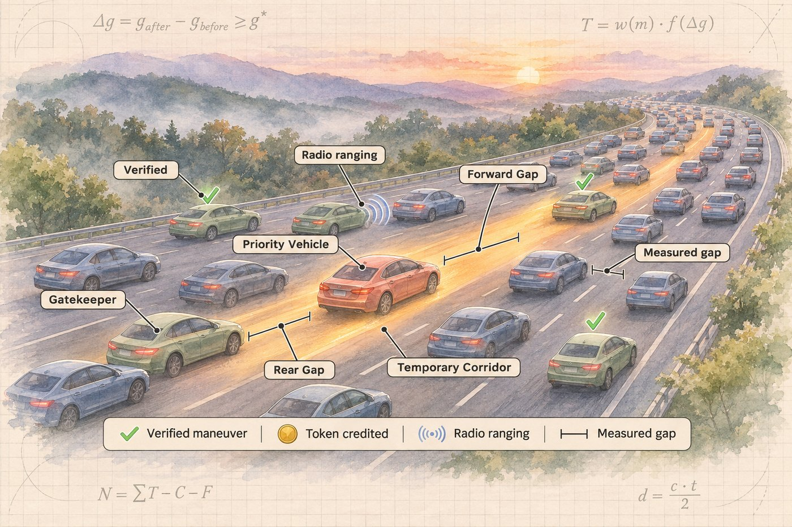
Verified Cooperation as a Traffic Resource
Sensor-verified multi-vehicle corridors and verification-gated token settlement in the Transactional Traffic Mediator
Abstract
Navigation software treats the vehicles around a traveler as obstacles. Cooperative-driving research has shown that connected vehicles can adjust to one another, but mostly in pairs, for a single maneuver, and without any reason for an uninvolved driver to take part. This paper describes the Transactional Traffic Mediator, a coordination layer that treats small acts of cooperation on the road as a resource that can be requested, valued, verified and settled.
The system makes four contributions. First, it resolves each vehicle to a lane by fusing satellite positioning with inertial data, map matching and radio ranging over ultra-wideband or Bluetooth Channel Sounding. Second, it computes a coordinated plan in which two or more assisting vehicles each perform a different, individually assigned micro-maneuver, and the maneuvers together open one contiguous temporary corridor for a priority vehicle, within spacing and speed limits. Third, it verifies that each maneuver physically happened, by measuring the gap between vehicles before and after and by distance-bounding checks witnessed by independent nearby devices. Fourth, it credits a token only on that verification, lets tokens accrue in a tamper-evident ledger, and moves money once per period in a single netted batch.
We give a formal description of each stage, a catalogue of eight multi-vehicle choreographies with their completion criteria, an analysis of why per-maneuver payment is infeasible and batch settlement is not, and a plan for evaluation. No field trial has been run; this is a design and analysis paper.
Keywords: cooperative driving, connected vehicles, lane-level localization, ultra-wideband ranging, distance bounding, mechanism design, micropayments, emergency vehicle preemption
- 1. Introduction
- 2. Related work
- 3. System overview
- 4. Lane-level localization
- 5. Corridor planning
- 6. Individualized value and offers
- 7. Completion verification
- 8. Tokens and deferred settlement
- 9. Two-way membership
- 10. Emergency and autonomous operation
- 11. Safety, voluntariness and equity
- 12. Analysis
- 13. Evaluation plan
- 14. Open questions
- 15. Conclusion
- References
1. Introduction
Road space is scarce, and the way it is shared is almost entirely unpriced. Congestion pricing, first analysed by Vickrey [4], puts a price on entering a road or a zone. It does not reach the scale at which most delay is actually created and relieved: the few metres between one vehicle and the next. A driver who eases off to let another vehicle merge gives up a little time and receives nothing. A driver who needs to cross three lanes to reach an exit has no way to ask for the gaps that would make it safe.
Three technical obstacles have kept cooperation at this scale from being organised.
Position. Consumer satellite positioning alone often cannot tell which lane a vehicle is in. A plan that assigns different jobs to vehicles in adjacent lanes cannot be built on it.
Proof. If value is released when a driver accepts an offer, or taps a button to say the maneuver is done, the system can be cheated by anyone willing to claim cooperation without performing it.
Payment. A single lane-level maneuver may be worth a few cents. Every movement of real money carries a processing cost that is typically larger than that. Paying per maneuver loses money on every transaction.
The Transactional Traffic Mediator (TTM) addresses the three together. It localizes vehicles to the lane by sensor fusion and secure radio ranging; it coordinates a set of vehicles, not a pair, into one corridor; it conditions value on independent, sensor-derived verification that the assigned physical action took place; and it separates the crediting of value from the movement of money, so that many small verified events settle as one transaction.
The aim is not speed for its own sake. Every maneuver the system proposes is bounded by a minimum following distance and the applicable speed limit, is offered as a voluntary suggestion, and can be declined by a human or vetoed by a vehicle's own safety controller.
2. Related work
Cooperative lane changing. Car-following and lane-changing models such as the Intelligent Driver Model [9] and MOBIL [10] describe how individual vehicles react to their neighbours. With vehicle-to-vehicle communication, neighbours can act jointly. Wang et al. [1] propose a cooperative lane change model in which the leading vehicles in both lanes adjust their acceleration so that a lane change becomes feasible in congested traffic and the follower in the target lane brakes less; the result is validated in simulation. Surveys of coordination at merges and intersections [13] and reservation-based intersection control [12] extend the idea to conflict points. This body of work establishes that coordinated speed adjustment can open usable gaps. It concerns the kinematics of one maneuver, assumes the vehicles involved will cooperate, and has no mechanism for value, verification or settlement.
Paid priority. A granted U.S. patent on traffic decongestion [2] describes bidding for faster routes and faster signals, and compensation for taking a slower route or pulling off the road. It operates at the level of routes and traffic control, not individually assigned lane-level actions by several vehicles that are each verified and paid separately.
Emergency vehicle warning. Systems such as [3] warn motorists of an approaching emergency vehicle and give lane guidance. They do not assign role-specific maneuvers to named vehicles or verify that the maneuvers occurred.
Secure ranging. Distance-bounding protocols [5] let a verifier place an upper bound on its physical distance to a prover from the round-trip time of a challenge and response. Ultra-wideband ranging under IEEE 802.15.4z [6] and Bluetooth Channel Sounding [7] bring secure ranging to consumer hardware. TTM uses these as evidence that a physical maneuver took place.
String stability. A maneuver that opens a gap can send a braking wave backwards through traffic. The string-stability literature [11] gives the criterion for when a disturbance is damped instead of amplified, which TTM uses as a completion condition for one of its choreographies (Section 5.3).
| Cooperative lane change [1] | Paid route priority [2] | Emergency warning [3] | TTM | |
|---|---|---|---|---|
| Unit of coordination | One lane change | Route or signal | Warning to drivers | Set of lane-level micro-maneuvers forming one corridor |
| Vehicles assigned distinct roles | Implicit | No | No | Yes, two or more |
| Incentive to cooperate | None | Bid or compensation | Legal duty | Individualized value per role |
| Proof the action happened | None | Not central | None | Before and after gap measurement, witnessed ranging |
| What triggers value | n/a | Transaction | n/a | Verification only |
| Settlement | n/a | Per transaction | n/a | Tokens accrue; one netted batch per period |
3. System overview
The platform may run on central or distributed servers, edge nodes, vehicle processors and phones. It reaches participants through mobile apps, in-vehicle displays, manufacturer applications, fleet systems, automated-driving stacks and roadside units. Its four working parts are a localization module, a maneuver planner, a verification engine, and a token ledger with a settlement engine (Figure 1).
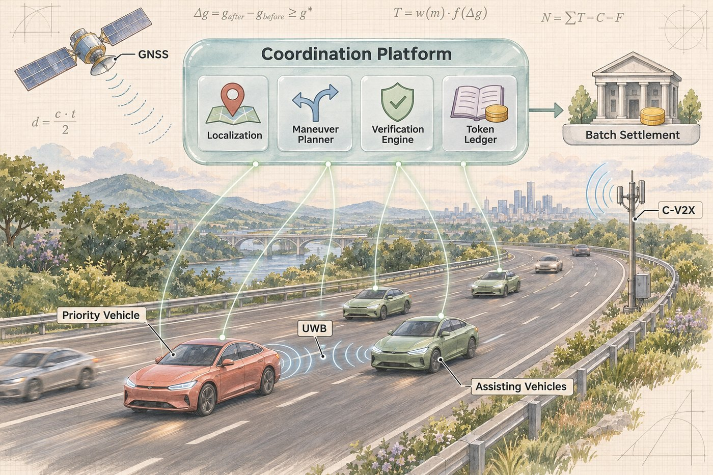
A request moves through seven stages (Figure 2). A priority participant states a destination and a limit on what the trip may cost. The platform localizes nearby vehicles, plans a corridor, and sends each selected assisting vehicle its own maneuver and its own value. Participants may accept, decline or counter; the plan is recomputed when they do, when positions change, or when roadside infrastructure signals a change. Each maneuver is then verified, a token is credited for each verified maneuver, and tokens are settled at the end of the period.
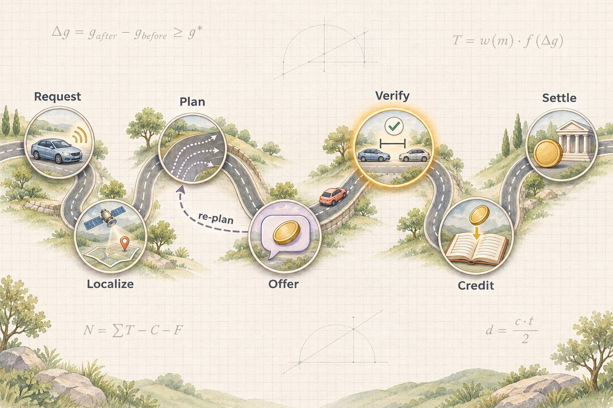
Before committing, the priority participant sees a baseline arrival time, a priority arrival time, the estimated time saved, and the estimated total cost built up from the individual values. The participant can accept, reject, lower the maximum per-maneuver value, or choose only lower-cost actions.
4. Lane-level localization
Let p denote the priority vehicle and A = {a1, …, an} the assisting vehicles on a roadway segment. The state of vehicle i is
where ℓi is the lane index, si the position along the lane and vi the speed. The platform needs ℓi exactly and the gaps between neighbours accurately. It estimates the state by fusing a satellite fix zG with at least one of inertial data zI or map matching zM, and with radio ranges rij to nearby vehicles:
The ranges come from ultra-wideband two-way time-of-flight or Bluetooth Channel Sounding. For time-of-flight, the distance follows from the round-trip time t after subtracting the responder's known reply delay treply:
Satellite positioning gives an absolute position with an error that can exceed a lane width. Inertial and steering data track short-term motion. Map matching constrains the estimate to drivable lanes. Ranging ties each vehicle to its neighbours with a much smaller error and supplies the inter-vehicle gap directly. Where available, real-time kinematic corrections, camera lane detection, radar, lidar, Wi-Fi round-trip time, vehicle telematics and C-V2X messages [8] can be added to the fusion (Figure 3).
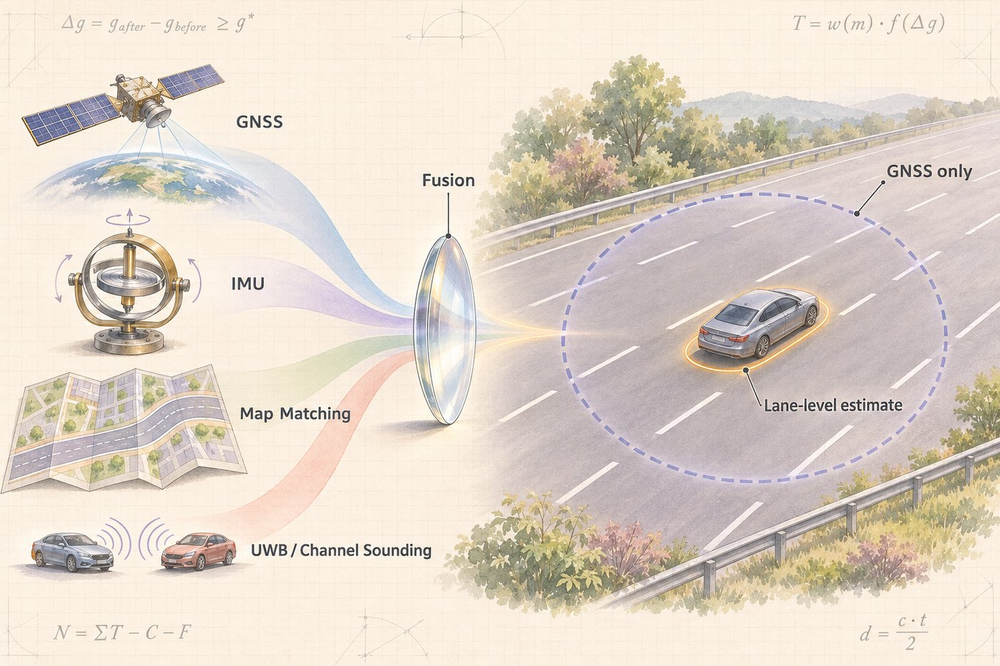
Two further bindings matter for trust. Cryptographic pairing between a phone and a vehicle shows that the phone is inside the vehicle it claims. Secure distance bounding places an upper limit on the physical separation between two vehicles, which defeats relay attacks in which a distant device pretends to be near.
5. Corridor planning
5.1 The plan
Let M be the set of micro-maneuvers: create a forward gap, create a rear gap, hold position, refrain from accelerating, merge into a gap, vacate a lane, exit, or seal a corridor (Figure 4). A micro-maneuver is a discrete, safety-conditioned action or non-action that affects flow at lane level. A coordinated maneuver plan assigns one maneuver to each of K selected assisting vehicles:
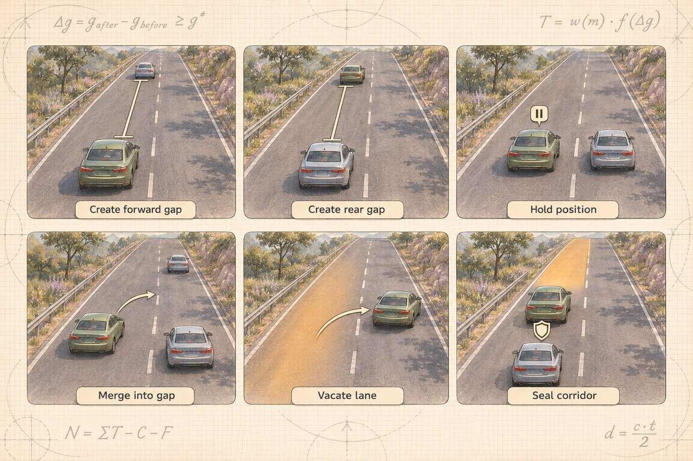
The plan is valid when the maneuvers, performed together, form a contiguous temporary travel corridor for p: a connected region of lane and time through which the priority vehicle can pass. No single maneuver in the plan is sufficient on its own. Every plan must satisfy two constraints throughout its execution, for every adjacent pair of vehicles (i, j) and every vehicle i:
where gij is the gap, gmin the minimum following distance at the current speed, and vlim the applicable speed limit. The planner rejects any maneuver that would require unlawful speed, unsafe spacing, sharp braking or excessive distraction. The plan may be computed by search, by optimization, or by a trained model that takes lane-level positions, speeds and predicted trajectories as input and returns the assignment.
5.2 A worked corridor
Figure 5 shows the simplest complete case. A first assisting vehicle slows slightly to open a forward gap. A second holds back to open a rear gap. A third merges into the space the first two created, which clears its former position. A fourth acts as gatekeeper, pacing the corridor's entrance so that a non-participating vehicle cannot take the space before the priority vehicle uses it. Each of the four has a different job, a different value and a different completion test.
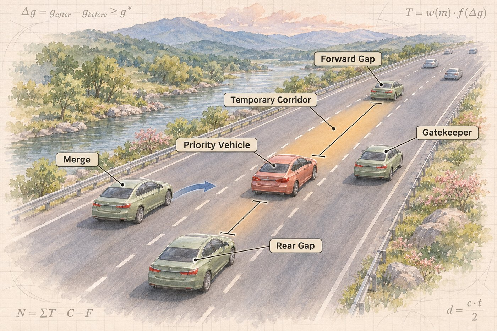
5.3 Choreographies
The same building blocks compose into larger patterns. Table 2 lists eight. In each, every role has its own sensor-verified completion criterion, and that criterion alone triggers the role's token.
| Choreography | Roles | What is verified |
|---|---|---|
| Rolling lane-vacation wave | Sequential vacators, paired receivers, trailing gatekeeper | Lane departure inside a scheduled time window, with ranging confirming the vacator entered its receiver's gap; receiver's gap change; gatekeeper's held trailing range |
| Multi-lane zipper hand-off | Opener pair per lane, hand-off marshal per boundary, tail-sealer | Each framed slot reached and held its length; the priority vehicle's lane index advanced by one and cleared the prior slot; no intruder in the origin gap |
| Corridor integrity defense | Mouth-blocker, flank-pacers, tail-sweeper | Entrance gap held below an intrusion threshold; shoulder stations held with no lateral incursion; progressive re-closure behind |
| On-ramp slot manufacture | Mainline slot-makers, upstream speed-pacer, merge-confirmer, blocker | Gap opened to target length within the ramp vehicle's predicted arrival window; speed band held; the specific ramp vehicle entered its assigned slot |
| Emergency wedge cascade | Center-lane peelers, outer-lane absorbers, tail-keeper | Lateral peel executed; receiving gaps opened; emergency vehicle traversed the center; rear seal held |
| Crosswalk sentinel hold | Turning vehicles, through vehicle, gap-keeper | Stop position stayed clear of the mapped crosswalk for the whole crossing; the road user was detected crossing |
| Platoon split-and-seal | Split-front, split-rear, seal vehicle | Cross-slot reached target size and was used; the re-closing profile was low-jerk, so the gap closure damped instead of creating a shockwave [11] |
| Anticipatory slot bank | Pre-positioners, timing conductor, gap holders, late-fill blocker | Each vehicle reached and held its slot by the deadline; clocks aligned; banked gaps preserved until arrival |
Two of these reward restraint instead of movement. The crosswalk hold pays for verified non-encroachment. The platoon seal pays only if the gap was closed gently enough to satisfy a string-stability criterion. Both show that the unit being valued is a verified physical outcome, not an action for its own sake.
6. Individualized value and offers
One price does not fit every role. Holding position costs a participant little. Vacating a lane or taking an exit costs much more. For each assisting vehicle in the plan the platform determines an individualized value
where the context may include the vehicle's position, the expected delay, the complexity of the maneuver, urgency, traffic density, time of day, and current supply of and demand for cooperation. An assisting participant may set a minimum acceptable value and may counter an offer; the platform accepts a counteroffer when it falls within the maximum per-maneuver value the priority participant has set. A rejected offer or a counter triggers re-planning before any token is credited.
7. Completion verification
An accepted offer is a promise. TTM does not credit value for a promise. For each assigned maneuver the verification engine measures the physical quantity the maneuver was supposed to change. For a gap-creating maneuver that quantity is the inter-vehicle gap, measured before and after:
The maneuver is complete when the change meets its criterion and the measurement is corroborated:
Here gk* is the assigned target and Bk indicates that a distance-bounding measurement over the ultra-wideband or Channel Sounding link agrees with the claimed positions and has been cross-validated by at least two independent nearby ranging devices. For maneuvers that are not about opening a gap, the criterion is the analogous measured quantity: a lane-marking crossing with a matching yaw signature for a lane change, or the duration a position was actually held for a hold.
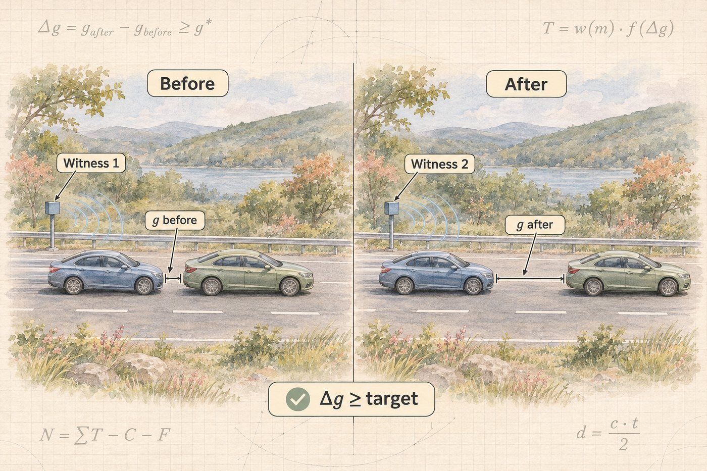
Evidence may also include speed and acceleration profiles, vehicle interface event logs, C-V2X messages, roadside-unit observation and automated-vehicle telemetry. The engine combines the evidence into a verification-confidence score ρk that governs full, partial or no credit.
7.1 The proximity verification device
Not every vehicle has built-in ranging. An aftermarket device (Figure 7) carries an ultra-wideband radio, a Bluetooth Channel Sounding radio, a satellite receiver, an inertial measurement unit and a secure element holding a credential bound to the host vehicle. In one form it plugs into the OBD-II port and reads the vehicle identifier from the data bus. During a maneuver it establishes a distance-bounding measurement to a device in another vehicle and produces a signed proximity attestation that binds three things: the host vehicle's identity, the distance-bounding measurement, and the measured change in relative position. The attestation is the evidence that this vehicle physically performed this maneuver near that vehicle.
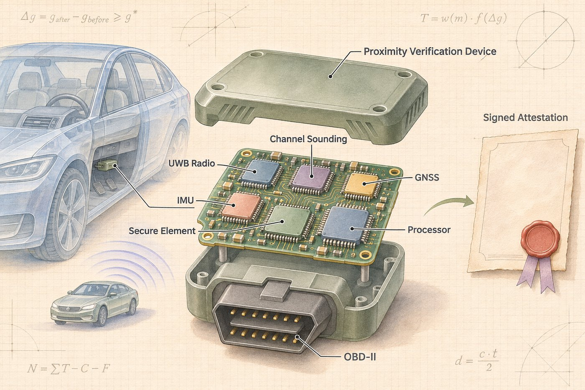
8. Tokens and deferred settlement
8.1 The confirmed token
When, and only when, the verification engine confirms a maneuver, the platform credits the assisting participant a confirmed token. The token is a unit of earned, not-yet-settled value. Its amount depends on the type of maneuver and on what the sensors measured:
where w is the per-maneuver-type weight and f depends on a measured characteristic qk of the completed maneuver, such as the size of the gap actually created or the time a position was actually held. Because Vk multiplies everything, a participant who merely accepts, acknowledges or simulates a maneuver earns nothing. Displaying an instruction does not create a token. Accepting an offer does not create a token. Acknowledging receipt of funds does not create a token. The token is anti-spoof by construction.
8.2 The ledger
Each token is recorded as a ledger entry bound to the event that earned it:
where h is a cryptographic hash. Chaining the entries makes the ledger tamper-evident: an entry cannot be inserted or altered afterwards without breaking every later link. Entries may also be anchored to a distributed ledger or signed by a secure element. In a distributed-ledger form, a smart contract releases or mints the token only on receipt of an attestation that verification occurred.
8.3 Batch settlement and netting
During a settlement period no money moves for individual maneuvers. At the period boundary the platform makes one aggregated payment or credit for the sum of the participant's tokens (Figure 8). Where the participant has also bought priority during the period, the platform settles only the net:
where C is the value of corridors the participant requested and F any recurring fee. A positive N is paid out or carried forward as one transaction; a negative N is charged as one transaction.
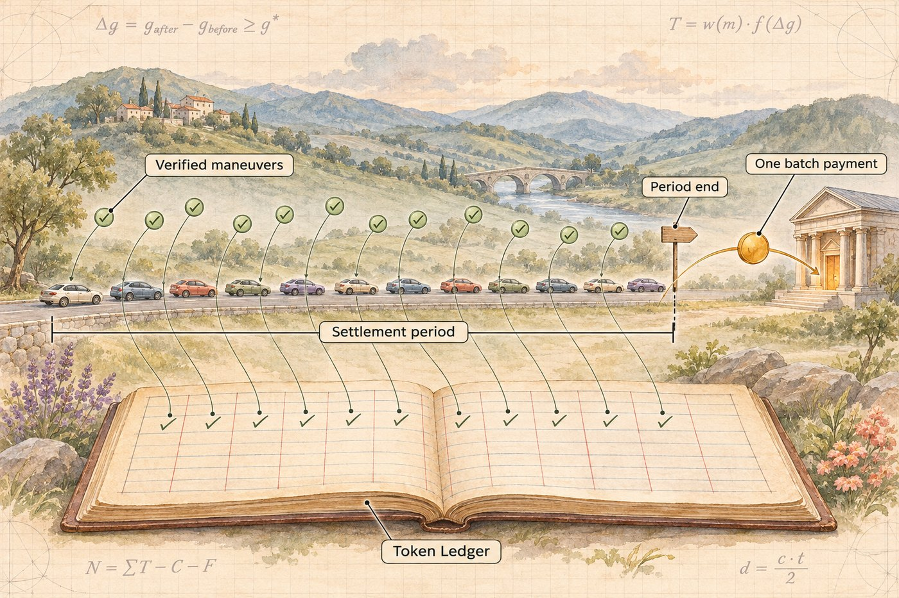
9. Two-way membership
Most drivers will be on both sides of the market: sometimes in a hurry, more often not. A membership joins the two roles in one account. In exchange for a recurring fee the account receives a periodic priority allotment, expressed as a budget, a number of requests, or a quantity of priority credits. The allotment is decremented as the member obtains corridors. The same member earns confirmed tokens by performing verified maneuvers for others. Earned tokens are fungible with the allotment: they can replenish it or offset the fee. At period end the account is resolved by Equation 11 in a single transaction (Figure 9). Higher tiers may carry a larger allotment, a higher maximum per-maneuver value, or preferential matching when assisting vehicles are scarce. A fleet account can net across many vehicles.
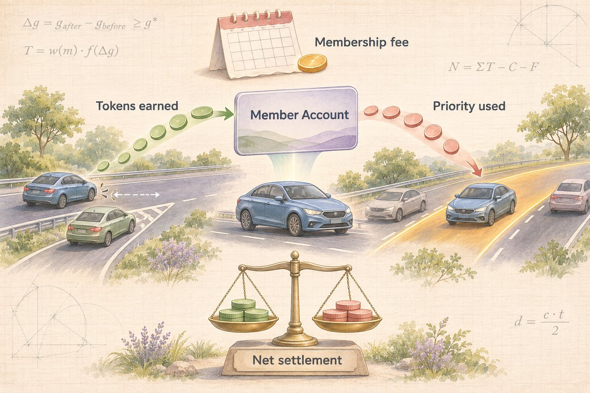
10. Emergency and autonomous operation
Emergency vehicles. An authorized emergency vehicle is a super-priority participant. The platform issues lane-specific, direction-aware instructions and can form a center corridor by a peel-and-absorb wedge (Figure 10): a pair of center-lane vehicles peel outward, outer-lane vehicles open receiving gaps to absorb them, and a tail-keeper holds behind the emergency vehicle so the corridor closes after it. Emergency clearing defaults to a non-commercial mode. Credits, where a jurisdiction chooses to offer them, come from an authority account, and cooperation is never conditioned on payment.
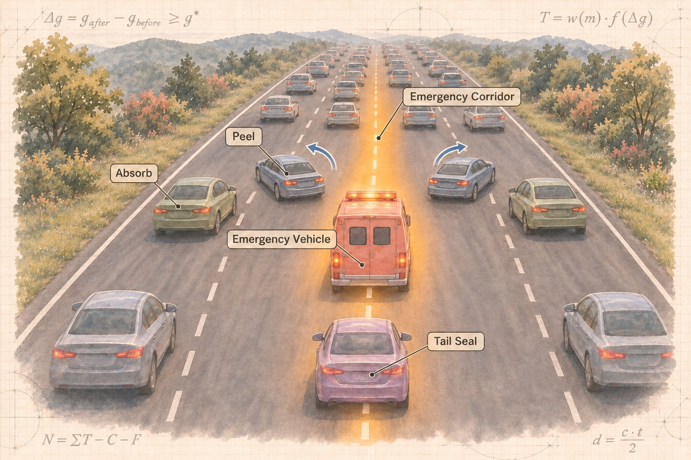
Automated vehicles. Where a vehicle drives itself, the platform talks to its driving system through an interface or V2X link. The vehicle's safety controller independently evaluates every assigned maneuver and keeps a veto that the platform cannot override. A vetoed maneuver earns no token. The architecture therefore spans phones in human-driven cars, assisted-driving systems, fleets and fully automated vehicles without depending on any one of them.
Third-party platforms. The functions are exposed through an interface so that ride-hailing, delivery, navigation and fleet services can request a priority-assisted trip, receive a projected time saving and a quote, and receive a settlement record, without building the localization, coordination and verification layers themselves.
11. Safety, voluntariness and equity
The economic layer never replaces the safety layer. Four rules hold in every embodiment.
Suggestions, not commands. Each maneuver is presented as a safety-conditioned, voluntary suggestion ("when safe, create space"). A human may decline without penalty.
Workload. Prompts are not presented in a way that adds to driver distraction and may be suppressed, simplified, deferred or converted to audio according to driving workload.
Emergency use is not for sale. Lane clearing for emergency vehicles defaults to non-commercial.
Priority is not decided by money alone. Safeguards include a subsidized or non-monetary path to priority for eligible participants, per-participant fairness caps, and an aggregate-congestion guardrail that rejects any plan predicted to increase total network delay beyond a threshold.
12. Analysis
12.1 Why per-maneuver payment fails and batching does not
Let φ be the fixed cost of one movement of money and u the value of one maneuver. Paying per maneuver is viable only if u > φ. Over a period with n verified maneuvers the two schemes cost
and batching is viable whenever the period total exceeds one fee, Σu > φ. With netting, some accounts settle to zero and incur no fee at all.
12.2 What a cheater must do
Table 3 lists the ways a participant might try to collect value without cooperating, and what stops each.
| Attempt | Why it fails |
|---|---|
| Accept the offer and do nothing | Δg does not meet g*; V = 0; no token |
| Report completion from the app | Self-report is not evidence; crediting is triggered only by sensor verification |
| Feed false satellite positions | Ranging to neighbours contradicts the claimed position |
| Relay radio signals from elsewhere | Distance bounding places an upper limit on true separation |
| Collude with one nearby device | Cross-validation requires at least two independent witnesses |
| Use a phone outside the vehicle | Cryptographic phone-to-vehicle pairing; device attestation bound to the vehicle identifier |
| Alter the ledger afterwards | Hash chaining makes any change detectable |
12.3 Relation to cooperative lane-change models
Models such as [1] answer a control question: given vehicles that will cooperate, what accelerations make a lane change feasible and gentle? TTM answers the questions around it: which vehicles should be asked, what each should be offered, how to know each did its part, and how to pay for it. The two are complementary. A kinematic model of the kind in [1] can serve inside the TTM planner to compute the acceleration profile for a gap-creating maneuver, while TTM supplies the participation, proof and settlement that such models assume away.
13. Evaluation plan
This paper reports design and analysis. The claims that need measurement, and how we propose to measure them, are these.
| Question | Method | Measure |
|---|---|---|
| How often is the lane assigned correctly? | Instrumented vehicles against a surveyed reference | Lane-assignment accuracy; gap error |
| How much time does a corridor save, and at what cost to others? | Microscopic traffic simulation across densities and participation rates | Priority time saved; change in total network delay |
| What participation rate is needed? | Simulation sweep | Corridor success rate against share of participating vehicles |
| Does verification reject false claims? | Bench and track tests with scripted spoofing | False-accept and false-reject rates |
| Do corridors create shockwaves? | Simulation and closed-track platoon tests | Speed variance upstream; string-stability margin |
| Do prompts distract? | Driving-simulator study | Glance time; workload ratings |
14. Open questions
Density of participants. A corridor needs willing vehicles in the right places. The system degrades gracefully, since a plan can be built from whoever is available, but its usefulness at low participation is an empirical matter.
Human factors. Even a well-timed suggestion asks something of a driver. The design favours passengers, automated vehicles and audio, and suppresses prompts under load. How far that goes in practice has to be measured.
Law and policy. Whether and where priority on public roads may be exchanged for value is a decision for regulators. The architecture supports non-monetary and authority-funded modes for jurisdictions that prefer them.
Fairness. The guardrails in Section 11 limit how much one participant's gain may cost everyone else. Choosing the thresholds is a public question, not only an engineering one.
15. Conclusion
Small acts of cooperation between vehicles have always existed and have never been organised. The Transactional Traffic Mediator makes them requestable, by planning a set of different maneuvers that together open one corridor; provable, by measuring the gap before and after and having the measurement witnessed; and payable, by crediting a token only on proof and settling once per period. The principle that runs through the design is that value follows verification. A promise earns nothing. A measured physical result does.
Patent notice
The system and methods described here are the subject of a pending United States patent application by the author. This paper is a description for research and educational purposes. For collaboration, evaluation partnerships or licensing, write to b@bennylabs.org.
References
- D. Wang, J. Wang, Y. Wang, and S. Tian, "Cooperative Lane Change Model for Connected Vehicles under Congested Traffic Conditions," in CICTP 2015, American Society of Civil Engineers, 2015, pp. 398–409. doi:10.1061/9780784479292.036
- "System and method for traffic decongestion," U.S. Patent 10,706,461 B2 (published as US 2017/0358025 A1).
- "Traffic warning system," International Publication WO 2019/030182 A2.
- W. S. Vickrey, "Congestion Theory and Transport Investment," American Economic Review, vol. 59, no. 2, pp. 251–260, 1969.
- S. Brands and D. Chaum, "Distance-Bounding Protocols," in Advances in Cryptology: EUROCRYPT '93, Lecture Notes in Computer Science, vol. 765, Springer, 1994, pp. 344–359.
- IEEE Std 802.15.4z-2020, IEEE Standard for Low-Rate Wireless Networks, Amendment 1: Enhanced Ultra Wideband (UWB) Physical Layers (PHYs) and Associated Ranging Techniques, 2020.
- Bluetooth Special Interest Group, Bluetooth Core Specification, Version 6.0 (Channel Sounding), 2024.
- SAE International, SAE J2735: V2X Communications Message Set Dictionary.
- M. Treiber, A. Hennecke, and D. Helbing, "Congested Traffic States in Empirical Observations and Microscopic Simulations," Physical Review E, vol. 62, no. 2, pp. 1805–1824, 2000.
- A. Kesting, M. Treiber, and D. Helbing, "General Lane-Changing Model MOBIL for Car-Following Models," Transportation Research Record, vol. 1999, pp. 86–94, 2007.
- D. Swaroop and J. K. Hedrick, "String Stability of Interconnected Systems," IEEE Transactions on Automatic Control, vol. 41, no. 3, pp. 349–357, 1996.
- K. Dresner and P. Stone, "A Multiagent Approach to Autonomous Intersection Management," Journal of Artificial Intelligence Research, vol. 31, pp. 591–656, 2008.
- J. Rios-Torres and A. A. Malikopoulos, "A Survey on the Coordination of Connected and Automated Vehicles at Intersections and Merging at Highway On-Ramps," IEEE Transactions on Intelligent Transportation Systems, vol. 18, no. 5, pp. 1066–1077, 2017.